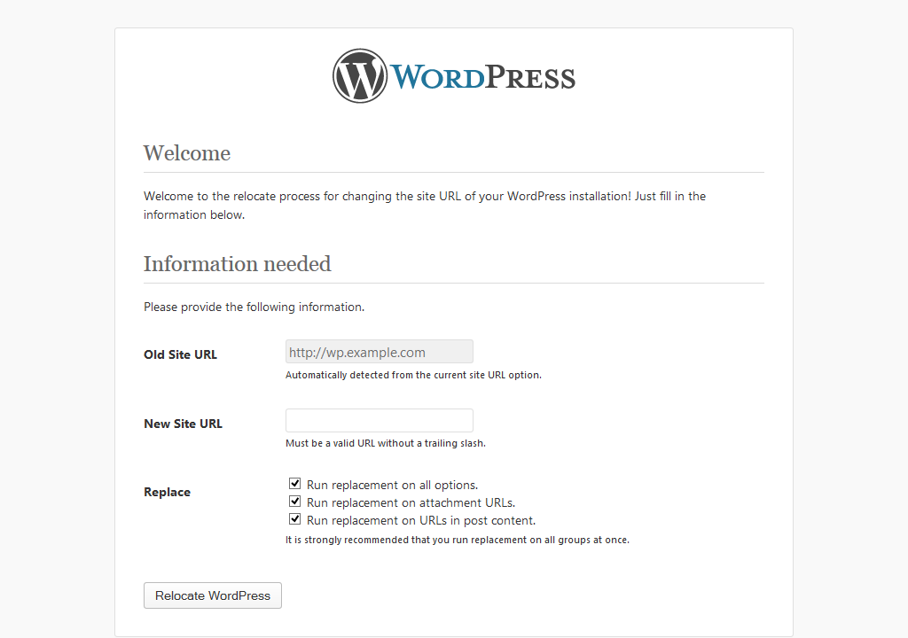

| Requires at least: | 3.5 |
| Tested up to: | 3.6-trunk |
| License: | GPLv2 or later |
A simple interface for replacing the Site URL and all options, attachment URLs, and references to the site URL in post content.
This plugin is installed like any other.
relocate/ folder to the wp-content/plugins directory.You must have administrator privileges (or at least the manage_options capability).
http://www.mynewdomain.com).If you previously moved your files to a new server and plan on using a new domain -- you can use this plugin to finish the job.
wp-config.php:define('RELOCATE', true);http://www.mynewdomain.com.http://www.myoldsite.com).http://www.mynewdomain.com as the "new" URL with which to replace.wp-config.php!Let's suppose you used another method or this plugin to change from http://
www.example.com to http://new.example.comasdf -- an accidental mistake. You now need to fix this.
define('RELOCATE', true);wp-config.php file.
http://www.example.com) and access the plugin from there, assuming your domain and server still respond to the old hostname.http://new.example.comasdf (the error you need to revert).http://www.example.com to revert your past changes.wp-config.php!After making the correction, you can go back and use the plugin to re-run the process correctly.
Before using the plugin, it is imperative that the new domain and path are ready. This means:
new.example.com)/home/myuser/public_html/wordpress).wp.local)/home/myuser/public_html/wordpress).
If WordPress will not allow you to log in, you can go directly to the plugin at http://www.mynewdomain.com/wp-content/plugins/relocate/interface.php and run through the procedure without logging in. ↩
Same as #1, but use the old domain: http://www.example.com/wp-content/plugins/relocate/interface.php. ↩